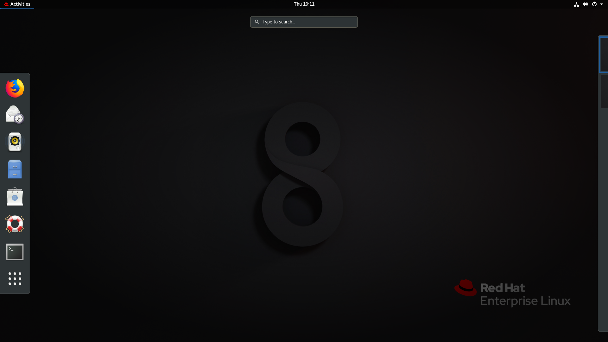

Red Hat Enterprise Linux


Linux has a number of different versions to suit any type of user. From new users to hard-core users, you’ll find a “flavor” of Linux to match your needs.
These versions are called distributions (or, in the short form, “distros”). Nearly every distribution of Linux can be downloaded for free, burned onto disk (or USB thumb drive), and installed (on as many machines as you like).
Each distribution has a different take on the desktop. Some opt for very modern user interfaces (such as GNOME and Elementary OS’s Pantheon), whereas others stick with a more traditional desktop environment (openSUSE uses KDE).
You can check out the top 100 distributions on the Distrowatch.
And don’t think the server has been left behind. For this arena, you can turn to Red Hat Enterprise Linux, CentOS or SUSE Enterprise Linux for example.
Some of the above server distributions are free (such as Ubuntu Server and CentOS) and some have an associated price (such as Red Hat Enterprise Linux and SUSE Enterprise Linux). Those with an associated price also include support.
Which distribution is right for you ?
Which distribution you use will depend on the answer to three simple questions:
If your computer skills are fairly basic, you’ll want to stick with a newbie-friendly distribution such as Linux Mint, Ubuntu (Figure 3), Elementary OS or Deepin. If your skill set extends into the above-average range, you could go with a distribution like Debian or Fedora. If, however, you’ve pretty much mastered the craft of computer and system administration, use a distribution like Gentoo. If you really want a challenge, you can build your very own Linux distribution, with the help of Linux From Scratch.
If you’re looking for a server-only distribution, you will also want to decide if you need a desktop interface, or if you want to do this via command-line only. The Ubuntu Server does not install a GUI interface. This means two things your server won’t be bogged down loading graphics and you’ll need to have a solid understanding of the Linux command line. However, you can install a GUI package on top of the Ubuntu Server with a single command like sudo apt-get install ubuntu-desktop. System administrators will also want to view a distribution with regards to features. Do you want a server-specific distribution that will offer you, out of the box, everything you need for your server? If so, CentOS might be the best choice. Or, do you want to take a desktop distribution and add the pieces as you need them? If so, Debian or Ubuntu Linux might serve you well.